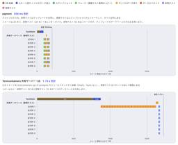
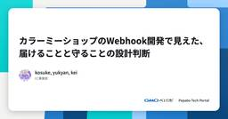
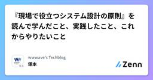
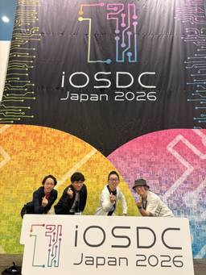
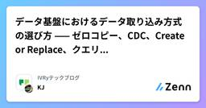

直近1週間の人気フィード
はてなブックマーク数を元に新着優先で並べ替え

速くて安いAI「Jev」でQAを自動化してみた
 179 every Tech Blog
179 every Tech Blog
はじめに こんにちは！株式会社エブリーで1ヶ月間、iOS エンジニアとしてインターンをしていた木村風葉です。ヘルシカの iOS チームで、食事記録まわりの改善や無料会員向けの機能追加など、いくつかの機能開発に取り組みました。 この記事では、インターンの後半に取り組んだ「Jev」という新しいAIを使った検証ツールづくりについて書きます。Jevは、文章を生成する代わりに「選択肢のどれを選ぶか」を確率付
2日前

E2E テストのフィードバックループを小さくするためのプラクティス 69 フューチャー技術ブログ
フューチャー技術ブログ
コーディングエージェントの普及で E2E テストの比重が上がるなか、テスト基盤の側でフィードバックループを小さくする4つのプラクティス（デプロイレスのテスト実行・テストの並列化・自己完結型のテストレポート・分散トレーシング）を紹介します。
2日前
AIで引ければいい、から始めた運用ナレッジ 37 RAKUS Developers Blog | ラクス エンジニアブログ
RAKUS Developers Blog | ラクス エンジニアブログ
はじめに 楽楽販売を担当している梶です。 運用の知識をAIから引ける（AIが検索して参照できる）ようにして、開発フローの概要設計に運用影響の確認を組み込むところまで来たので、その経緯を書きます。最初から全体を設計していたわけではなく、気づきのたびに一段ずつ足してきた記録です。 運用への影響は、できるだけ設計の段階で拾っておきたいと考えています。サービスを利用するお客様の業務を止めないため、そして、
1日前

開発・検証環境のPR承認と負荷試験をAIに任せる ── SRE待ちを減らす線引きとハーネス 26 ZOZO TECH BLOG
ZOZO TECH BLOG
はじめに こんにちは、SRE部 検索基盤SREブロックの花房と富田です。普段は、ZOZOTOWNの検索基盤における信頼性向上やコスト改善、インフラ運用を担当しています。 検索基盤の開発案件では、開発者とSREが役割を分担して本番リリースまでの作業を実施しています。その中で、インフラリポジトリのPull Request（PR）レビューと、リリース前の負荷試験はSREの作業待ちになることがありました。
2日前

E2Eテストを爆速にする: オンメモリPostgreSQLのpgmem 59 フューチャー技術ブログ
完全にオンメモリで動き、テストケースごとにフォークしてスケールするPostgreSQL「pgmem」を作りました。テストダブルの分類からアーキテクチャ、テスト用API、パフォーマンスまでを紹介します。
3日前

人による工数見積もりをやめて、AIに任せることにした 17 TANP Blog
こんにちは、エンジニアの安達です。 これまでのタンプでは、新しい施策を検討するとき、事業部がやりたいことを整理し、それをもとにエンジニアがヒアリングを行い、開発チーム全員で工数を見積もっていました。 現在はこのプロセスを大きく変更し、事業部が要求定義を書き、AIがコードベースを確認しながら内容をレビューし、工数まで見積もる。その結果をもとに、事業部でロードマップの優先順位まで判断します。 つまり、
3日前

Claudeが実装したE2Eテストをレビューするツールを自作してみた 31 エムスリーテックブログ
エムスリーテックブログ
こんにちは。エムスリーのQAチームの須賀です。 私が担当するチームでは、開発経験のないQAエンジニアの方もClaudeを用いてPlaywrightのE2Eテストを実装しています。 Claudeを用いることでE2Eテストの実装自体は簡単になりましたが、Claudeが実装したコードは「テスト実行は成功するがテスト手順や操作対象が誤っている」こともあります。そのため、Claudeが実装したE2Eテストの
3日前

MySQL の Functional Index で状態に応じた一意制約をかける 14 inSmartBank
inSmartBank
こんにちは、スマートバンクでプロダクトエンジニアをしている yuhi（@yuhi_junior）です。 皆さんはレコードの状態を表すカラムの値に応じて一意制約をテーブルにかけたいと思ったことはありませんか？意図しない状態のレコードが混入しないことをデータベース層で担保できたら嬉しいですよね。 今回はあるデータモデルを題材として Functional Index による一意制約を実現する方法を説明し
3日前

カラーミーショップのWebhook開発で見えた、届けることと守ることの設計判断 23 Pepabo Tech Portal
WebhookとはカラーミーショップにWebhookを導入した理由要件定義で考えたポイント 通知の取りこぼしを既存APIで補えるか確認する登録主体はショップオーナーに限定する登録できる配信先URLの数に上限を設ける設計方針 Standard Webhooksの採用カラーミーショップ特有の考慮点 thin payloadの採用Outboxパターンの採用ユースケースに合わせたリトライ戦略配信状態と試行
3日前

サイボウズのログ基盤 2026年版 ― Apache Iceberg × Trino によるアーキテクチャ刷新 15 Cybozu Inside Out | サイボウズエンジニアのブログ
Cybozu Inside Out | サイボウズエンジニアのブログ
はじめに こんにちは。ログ基盤チームの吉本です。 cybozu.com では、2018年のブログ記事でご紹介したログ基盤を長期にわたって運用してきましたが、このたびサイボウズの Kubernetes 基盤である Neco へ移行しました。 今回の移行では、旧ログ基盤が抱えていた課題や移行に伴う制約を踏まえ、アーキテクチャを全体的に刷新しています。 本記事では、この新しいログ基盤の全貌についてご紹介
4日前

『現場で役立つシステム設計の原則』を読んで学んだこと、実践したこと、これからやりたいこと 13 wwwave's Techblogのフィード
wwwave's Techblogのフィード
はじめにこんにちは、塚本です。私が担当している業務では、長年運用されてきたシステムを少しずつ改善する取り組みを続けています。これまでに、『レガシーコードからの脱却』を読んでRSpecを導入した話や、Access VBAのシステムを撤退させるための技術選定の話を書いてきました。どちらも、変更したときに「何が壊れるか」を検知できる状態、つまりテストをどう整えるか、という話でした。一方で、テストを整える
4日前

iOSDC Japan 2026 参加レポート 8
 stmn tech blog
stmn tech blog
自己紹介 こんにちはriataso です。 iOSエンジニアとして、TUNAG のアプリ対応を担当しています。 iOSDC への参加は今回で2回目です。最近は知り合いが次々と iOS から別のポジションへ移っていくことが多く、少し寂しさを感じていました。そんな中で、会場に iOS エンジニアがこれだけ集まっている景色を見ると、やっぱりいいなと思います。 はじめに 9月11日〜13日に有明で開催され
4日前

良いテストを書き、良いテストを見分ける ─『単体テストの考え方/使い方』のエッセンス 4 Nexta Tech Blogのフィード
はじめに株式会社ネクスタの tetsu.k です。生産管理SaaS「スマートF」の開発に携わっており、受注・発注・出荷・見積などのドメインを担当するチームに所属しています。ネクスタでは、事業の拡大とともにアプリケーションが複雑になっていくなかで、より速く、より良い価値を届け続けるために、「品質」に力を入れています。品質を支える手段の一つが、単体テストです。いまはAIに頼めば、テストを数秒で何十本も
5日前

データ基盤におけるデータ取り込み方式の選び方 —— ゼロコピー、CDC、Create or Replace、クエリベース増分更新 3 IVRyテックブログのフィード
こんにちは、IVRyでデータエンジニアとして働いている松田健司（@ken_3ba）です。趣味はビリヤードで、プロの試合にも出ているぐらい割とガチでやっています。最近シャフト(キューの上半分の部分)を新調しました。木に色を入れた7色のカラフルなデザインのUNLIMITEDのシャフトがあるのですが、結局いちばん無難な黒を選びました。7色のシャフト。ビリヤードの話はこのへんにして、本題に入ります。今回は
4日前